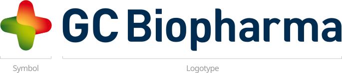

홈 > 브랜드 매거진 > 에이피알
에이피알
홈 뷰티 디바이스 시장을 연 뷰티테크 기업
산업 분야 헬스·제약 · 공개 등급 자료 기반 · 브랜드 평가 4 ★
AP
에이피알
한눈에 보는 브랜드
2014년 설립된 것으로 알려진 회사로, 삼성전자 출신 창업자가 만든 것으로 알려져 있다. 초기 화장품 브랜드(에이프릴스킨 등)로 출발한 뒤 메디큐브 등 브랜드를 통해 홈 뷰티 디바이스(미세전류·LED 기기 등) 사업으로 영역을 넓혔다.
이후 뷰티테크 기업으로서의 정체성을 강화하며 2024년 코스피에 상장했다.
브랜드 아이덴티티
화장품 브랜드에서 출발해 하드웨어(뷰티 디바이스) 영역으로 사업을 확장한 사례로, 소프트 뷰티와 하드웨어 기술을 결합한 카테고리 창출형 성장을 보여준다. 화장품과 뷰티 디바이스를 결합한 멀티 브랜드 전략과 온라인·라이브커머스 중심 마케팅을 통해 빠르게 성장했다.
제품과 서비스
대표 제품과 서비스 정보는 편집 검수 후 공개됩니다.
타임라인
BI/CI 변천사
확인된 BI/CI 이미지가 아직 없습니다.
함께 읽을 브랜드
SC
소망화장품
헬스·제약 · 자료 기반소망화장품꽃을든남자로 남성 화장품 시장을 연 제조사

헬스·제약 · 자료 기반GC녹십자GC녹십자(GC Biopharma, 옛 녹십자)는 1967년 설립된 한국의 바이오제약 기업으로, 혈액제제와 백신으로 알려져 있다.
 헬스·제약 · 자료 기반COSRX
헬스·제약 · 자료 기반COSRX성분 중심 스킨케어로 해외에서 먼저 유명해진 브랜드
 기술·전자 · 자료 기반삼성전자
기술·전자 · 자료 기반삼성전자삼성전자(Samsung Electronics)는 한국을 대표하는 전자·반도체 기업으로, 인터브랜드 2025 베스트 코리아 브랜드 1위(브랜드 가치 약 122.2조 원...
 헬스·제약 · 편집 검수Framework
헬스·제약 · 편집 검수Framework프레임워크는 2019년 미국에서 설립된 모듈형 노트북 제조 기업으로, 사용자가 직접 부품을 교체하고 업그레이드할 수 있는 수리 가능한 컴퓨터를 만든다. 전자기기의 일...
Wh
When
헬스·제약 · 편집 검수WhenWhen는 2025년에 기록된 Health & Wellbeing 계열의 브랜드 아이덴티티 사례입니다. Universal Favourite가 아이덴티티 작업의 디자이너...
 헬스·제약 · 자료 기반한미약품
헬스·제약 · 자료 기반한미약품한미약품(Hanmi Pharmaceutical)은 1973년 임성기가 설립한 한국의 제약 기업으로, 신약 기술수출로 잘 알려져 있다.
헬스·제약 · 자료 기반덴티움덴티움은 치과용 임플란트와 골이식재 등 생체재료, 관련 장비를 함께 개발해 생산하는 대한민국의 치과 의료기기 기업이다. 경기 수원에 본사를 두며 오스템임플란트에 이은...